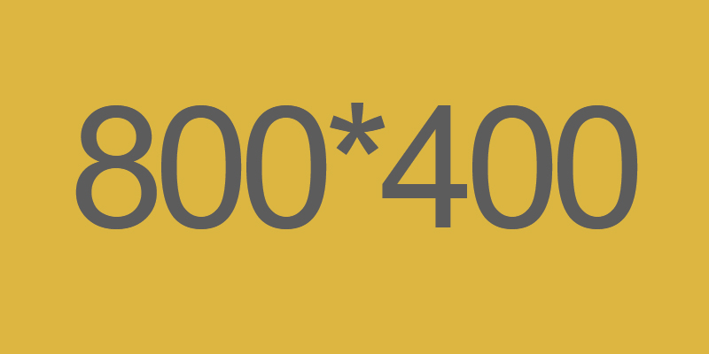

"つま先までキレイに見える"と高支持率のポインテッドトゥ♡
人気の4タイプから、あなたに合うものを診断♪

いつもの服に足すだけで今っぽさUP!
歩きやすさとオシャレ感が両方欲しい欲張りな方にオススメ！
安定感のある太ヒールは履くだけで今っぽさ満点♪
安定感のある太ヒールは履くだけで今っぽさ満点♪
￥1,990(税込)送料無料
合わせやすいのに女っぽい♥
おでかけ用はもちろん、お仕事にもOK！
どんなコーデにも合うのにいつでも女っぽく決まる♪
どんなコーデにも合うのにいつでも女っぽく決まる♪
￥1,990(税込)送料無料
"小顔パンプス"でスレンダー美人！
足が大きく見える要素をそぎ落としたデザイン。
脚長見せ9cmの直角ヒールは、まっすぐ立てて自然とキレイな姿勢に♥
脚長見せ9cmの直角ヒールは、まっすぐ立てて自然とキレイな姿勢に♥
￥2,790(税込)送料無料
足に優しくて上品見えも叶う♪
3cmのピンヒールとポインテッドトゥで女っぽさを残しつつ、歩きやすさもGET。
たくさん歩く日やママさんには、この楽ちんタイプがオススメ。
たくさん歩く日やママさんには、この楽ちんタイプがオススメ。
￥2,290(税込)送料無料
2018 パンプスCollection
売れ筋シューズRANKING